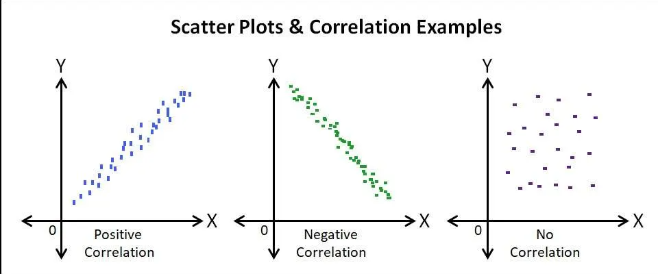
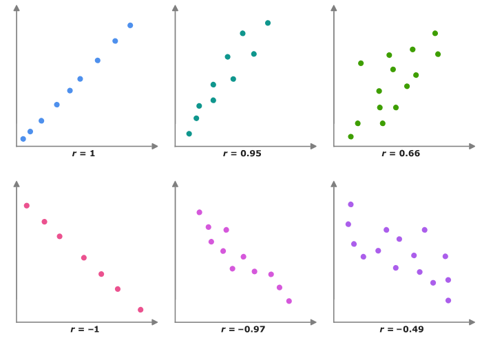
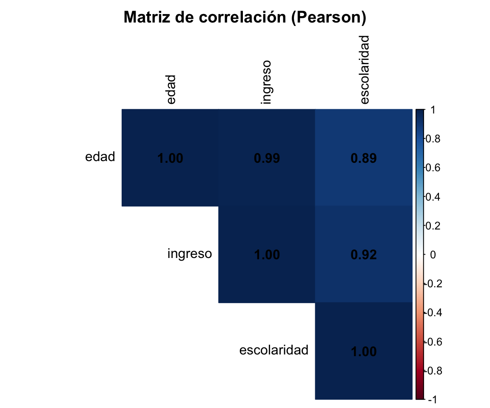
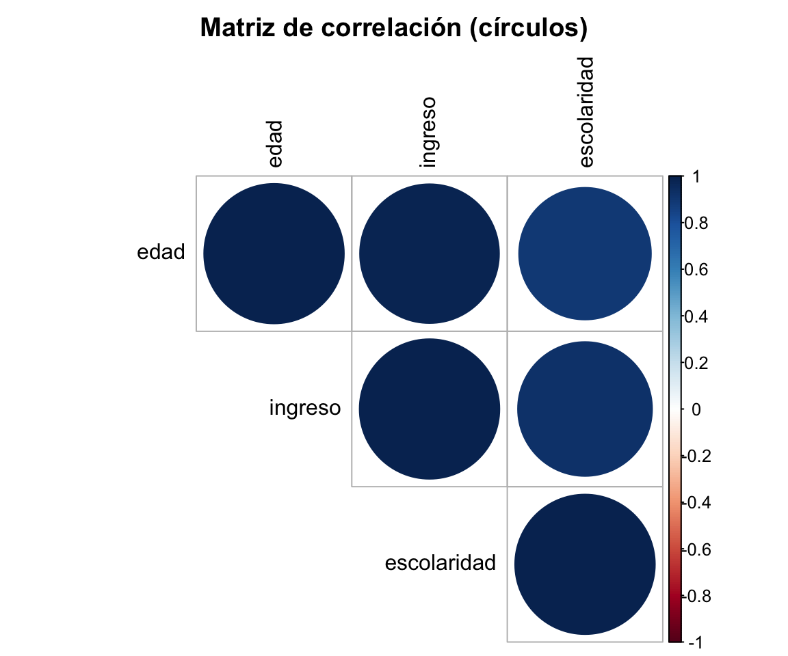

edad ingreso escolaridad
edad 1.0000000 0.9894757 0.8907690
ingreso 0.9894757 1.0000000 0.9208597
escolaridad 0.8907690 0.9208597 1.0000000Grupo de Estudio de Estadística Correlacional
¿Qué herramienta uso según mis variables?
| Variables | Herramienta |
|---|---|
| Dos cuantitativas | Pearson |
| Una cuantitativa y una dicotómica | Punto-biserial |
| Dos ordinales (o rankings) | Spearman / Kendall |
| Dos nominales | Chi-cuadrado, Phi / V de Cramer |
Primero identifico el tipo de variable, después elijo la técnica.
Dos variables están asociadas cuando los valores de una cambian junto con los valores de la otra.
Ejemplos:
Nos interesa saber:
Mide si dos variables cuantitativas se mueven juntas.
\[ s_{XY} = \frac{\sum (x_i-\bar{x})(y_i-\bar{y})}{n-1} \]
Su valor depende de las unidades de medida.
Ejemplo: la covarianza entre ingreso y escolaridad cambia si el ingreso está en pesos o en miles de pesos, aunque la relación sea la misma.
Entonces:
Solución: estandarizarla → correlación.
| Covarianza | Correlación | |
|---|---|---|
| Dice la dirección | Sí | Sí |
| Dice la magnitud | No (depende de las unidades) | Sí |
| Rango | Cualquier valor | Entre -1 y 1 |
| Comparable entre variables | No | Sí |
La dirección y la fuerza de la relación lineal entre dos variables cuantitativas.
\[ r = \frac{Cov(X,Y)}{S_X S_Y} \]
Es la covarianza dividida por las desviaciones estándar. Por eso queda entre -1 y 1.
Antes de calcular, hay que hacer un diagrama de dispersión (cada punto es una persona).


Una regla orientadora (varía según el campo): cerca de 0.1 es débil, de 0.3 moderada y de 0.5 o más fuerte.
Ojo: \(r = 0\) no descarta una relación no lineal (por eso miramos el gráfico).
Entre años de escolaridad e ingreso mensual: \(r = 0.65\)
Por eso: siempre revisar el diagrama de dispersión.
Hasta ahora describimos la muestra. Para saber si hay evidencia de asociación en la población usamos un contraste:
\[ H_0: \rho = 0 \qquad H_1: \rho \neq 0 \]
Pearson necesita variables cuantitativas y relaciones lineales.
Pero muchas variables son ordinales (satisfacción, nivel educativo, rankings): tienen orden, pero no distancias iguales.
Para estos casos usamos coeficientes basados en el orden.
Una relación es monótona cuando, al subir una variable, la otra siempre tiende a subir (o siempre a bajar), aunque no sea en línea recta.
Spearman y Kendall miden este tipo de relación.
Hay empates cuando varias personas tienen el mismo valor.
Es común en escalas cortas: muchas personas responden “4” en una escala de 1 a 5.
Kendall \(\tau_b\) corrige por los empates.
| Situación | Coeficiente |
|---|---|
| Dos variables cuantitativas, relación lineal | Pearson |
| Variables ordinales o relación monótona | Spearman |
| Variables ordinales con muchos empates | Kendall (\(\tau_b\)) |
¿Y si una variable es cuantitativa y la otra tiene solo dos categorías?
Para esto usamos la correlación punto-biserial.
Mide la asociación entre:
Es equivalente a Pearson cuando la variable dicotómica se codifica 0/1.
La idea: ¿qué tan distintas son las medias de los dos grupos?
Participación en tutorías (0 = no, 1 = sí) y nota final: \(r_{pb} = 0.42\)
Si invertimos la codificación 0/1, cambia el signo del coeficiente.
| Variables | Coeficiente |
|---|---|
| Edad e ingreso | Pearson |
| Satisfacción y confianza (ordinales) | Spearman / Kendall |
| Participación (sí/no) y nota | Punto-biserial |
| Dos rankings | Spearman / Kendall |
Una tabla que muestra todas las correlaciones entre varias variables a la vez.
| Variable | Edad | Ingreso | Escolaridad |
|---|---|---|---|
| Edad | 1.00 | 0.35 | -0.12 |
| Ingreso | 0.35 | 1.00 | 0.68 |
| Escolaridad | -0.12 | 0.68 | 1.00 |
edad ingreso escolaridad
edad 1.0000000 0.9894757 0.8907690
ingreso 0.9894757 1.0000000 0.9208597
escolaridad 0.8907690 0.9208597 1.0000000

En datos reales hay respuestas que faltan. En R se llaman NA.
| Persona | Edad | Ingreso | Escolaridad |
|---|---|---|---|
| A | 20 | 450 | 12 |
| B | 25 | NA | 14 |
| C | 30 | 650 | NA |
| D | 35 | 700 | 16 |
| E | 40 | 850 | 18 |
¿Qué hacemos con ellos? Dos opciones: listwise y pairwise.
Se usan solo las personas sin ningún NA en las variables de la matriz.
| Persona | ¿Se incluye? |
|---|---|
| A | Sí |
| B | No (NA en ingreso) |
| C | No (NA en escolaridad) |
| D | Sí |
| E | Sí |
Todas las correlaciones usan los mismos 3 casos.
Cada correlación usa todas las personas que tienen datos en ese par.
| Correlación | Casos usados |
|---|---|
| Edad - Ingreso | 4 |
| Edad - Escolaridad | 4 |
| Ingreso - Escolaridad | 3 |
Cada correlación puede tener un n distinto.
| Listwise | Pairwise | |
|---|---|---|
| Casos usados | Solo completos | Los disponibles por par |
| Tamaño muestral | Igual para toda la matriz | Puede variar |
| Aprovecha más datos | Menos | Más |
| Problema | Se pierden muchos casos | Cada coeficiente usa una muestra distinta |
No hay una opción universal: hay que justificar y reportar cuál se usó.
Tamaño del efecto = qué tan grande es la asociación, independiente del tamaño de la muestra.
En correlación, el propio coeficiente (\(r\), \(\rho_s\), \(\tau\), \(r_{pb}\)) es un tamaño del efecto.
Referencia habitual (Cohen), usando \(|r|\):
| r | |
|---|---|
| ≈ 0.10 | Pequeña |
| ≈ 0.30 | Mediana |
| ≈ 0.50 o más | Grande |
Son convenciones orientadoras: la interpretación depende del contexto de la investigación.
Elevar \(r\) al cuadrado indica la proporción de variación compartida entre las variables (en Pearson).
| r | r² | Se comparte |
|---|---|---|
| 0.30 | 0.09 | 9% |
| 0.50 | 0.25 | 25% |
| 0.70 | 0.49 | 49% |
Ejemplo: \(r = 0.65\) → \(r^2 \approx 0.42\) → comparten cerca del 42% de su variación.
| Variables | r | p |
|---|---|---|
| Escolaridad e ingreso | 0.62 | 0.001 |
| Edad y satisfacción | -0.12 | 0.280 |
| Horas de estudio y nota | 0.41 | 0.012 |
Para dos variables nominales (sexo, preferencia electoral, comuna) no se usa Pearson.
Usamos:
Cruza dos variables. Ejemplo con 100 personas:
| Usa transporte público | No usa | Total | |
|---|---|---|---|
| Mujeres | 35 | 15 | 50 |
| Hombres | 20 | 30 | 50 |
| Total | 55 | 45 | 100 |
Porcentajes por fila: usa transporte público el 70% de las mujeres y el 40% de los hombres.
¿Parece haber asociación?
Dos variables son independientes si la distribución de una no cambia según la otra.
Si sexo y transporte fueran independientes, el porcentaje que usa transporte público sería similar en hombres y mujeres.
Chi-cuadrado compara lo que observamos con lo que esperaríamos si fueran independientes.
\[ \chi^2 = \sum \frac{(O-E)^2}{E} \]
Mientras más se alejan O y E, mayor es el chi-cuadrado.
\(H_0\): las variables son independientes. \(H_1\): las variables están asociadas.
\[ E_{ij} = \frac{Total\ fila_i \times Total\ columna_j}{n} \]
Mujeres que usan transporte: \(E = \frac{50 \times 55}{100} = 27.5\)
| Usa transporte | No usa | |
|---|---|---|
| Mujeres | 27.5 | 22.5 |
| Hombres | 27.5 | 22.5 |
Sumamos \((O-E)^2/E\) de las cuatro celdas:
\[ \chi^2 \approx 9.09 \]
Grados de libertad: \(gl = (filas-1)(columnas-1) = 1\)
Resultado: \(\chi^2(1) = 9.09,\ p \approx 0.003\)
Como \(p < 0.05\), rechazamos H0: hay evidencia de asociación entre sexo y uso de transporte público.
Pearson's Chi-squared test
data: tabla
X-squared = 9.0909, df = 1, p-value = 0.002569Chi-cuadrado solo dice si hay asociación. No dice qué tan fuerte es ni si hay causalidad.
Son los tamaños del efecto para variables categóricas: miden qué tan fuerte es la asociación, de 0 a 1.
Phi (tablas 2x2):
\[ |\phi| = \sqrt{\frac{\chi^2}{n}} = \sqrt{\frac{9.09}{100}} \approx 0.30 \]
V de Cramer (cualquier tamaño de tabla):
\[ V = \sqrt{\frac{\chi^2}{n \cdot \min(r-1,\,c-1)}} \]
En una tabla 2x2, V es igual al valor absoluto de Phi.
En nuestro ejemplo: hay asociación significativa (\(p \approx 0.003\)) y de magnitud moderada (\(\phi \approx 0.30\)).
| Pregunta | Herramienta |
|---|---|
| ¿Hay asociación? | Chi-cuadrado (p-valor) |
| ¿Qué tan fuerte es? | Phi (2x2) o V de Cramer |
| ¿Cómo se ve? | Tabla de contingencia (porcentajes) |
Grupo de Estudio de Estadística Correlacional
Centro IDEA - FACSO
GE Correlacional